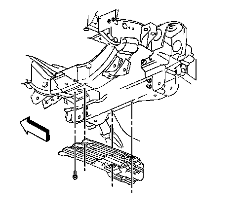
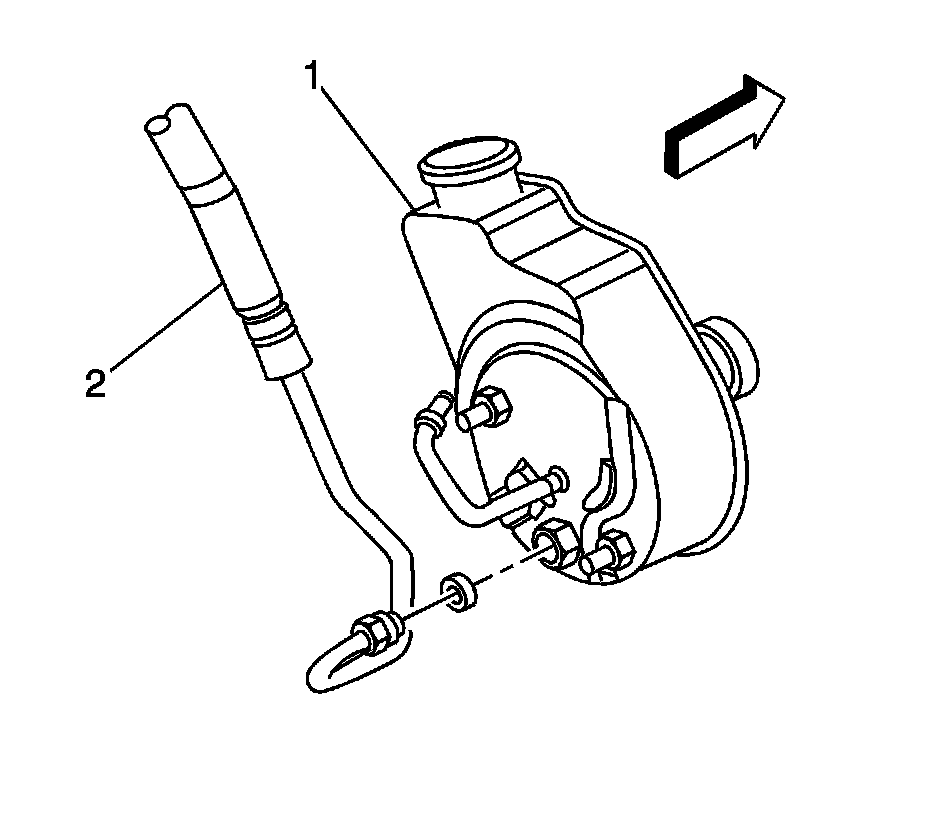
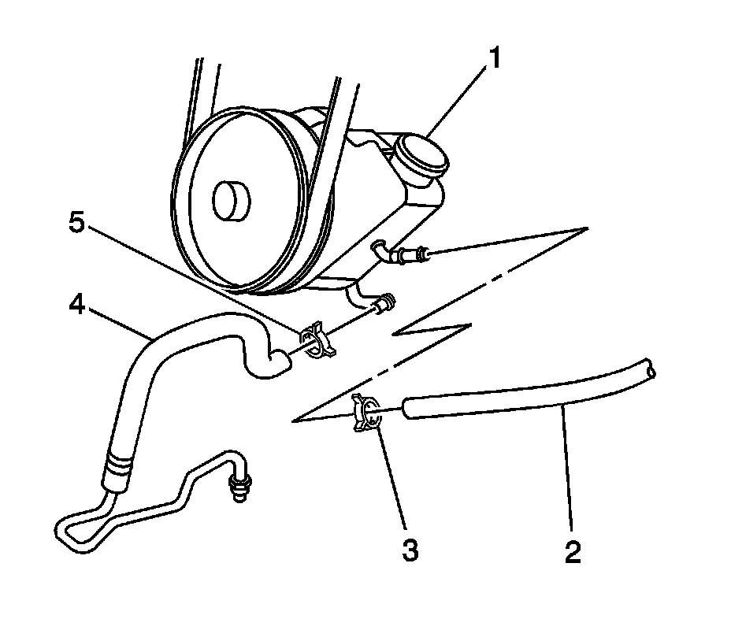
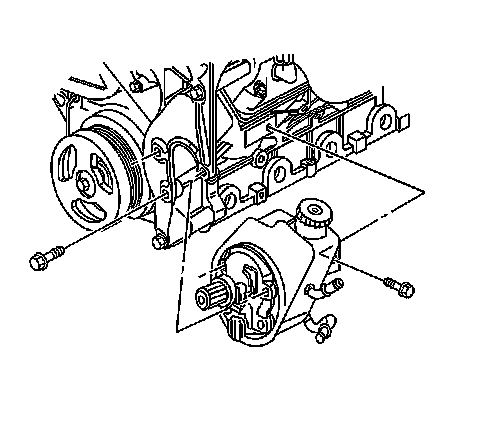
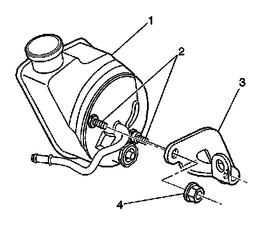

Power Steering Pump Replacement
Power Steering Pump Replacement (4.8L, 5.3L, 6.0L, and 6.2L)
Removal Procedure
1. Remove the power steering pulley.
2. Raise the vehicle. Refer to Lifting and Jacking the Vehicle.

3. Remove the oil pan skid plate bolts.
4. Remove the oil pan skid plate from the vehicle, if equipped.
5. Place a drain pan under the vehicle.

6. Remove the power steering pressure hose (2) from the power steering pump from underneath the vehicle.
7. Lower the vehicle.

8. Remove the clamp (5) retaining the power steering return hose to the power steering pump and remove the hose (4).
9. If equipped with hydroboost, remove clamp (3) and disconnect hose (2) from pump.
10. Remove the lower intermediate shaft from the steering gear.

11. Remove the bolt retaining the rear bracket to the engine.
12. Remove the bolts from the front of the pump.
13. Remove the pump from the vehicle.

14. Remove the bracket (3) from the rear of the pump (1).
Installation Procedure
Notice: Refer to Fastener Notice.
1. Install the bracket (3) to the rear of the pump (1).
Tighten the rear bracket retaining nuts to 50 N.m (37 lb ft).
2. Install the power steering pump.
3. Install the bolt retaining the rear bracket to the engine.
Tighten the rear power steering bracket bolt to engine bracket to 50 N.m (37 lb ft).
4. Install the bolts to the front of the pump.
Tighten the bolts to 50 N.m (37 lb ft).
5. Install the power steering pump return hose (4) to the power steering pump and install the retaining clamp (5).
6. If equipped with hydroboost, connect the hose (2) to pump and position the clamp (3)
7. Raise the vehicle. Refer to Lifting and Jacking the Vehicle.
8. Install the power steering pressure hose (2) to the power steering pump.
Tighten the fitting to 28 N.m (20 lb ft).
9. Install the oil pan skid plate, if equipped.
10. Install the oil pan skid plate bolts.
Tighten the retaining bolts to 20 N.m (15 lb ft).
11. Lower the vehicle.
12. Install the intermediate shaft.
13. Install the power steering pulley.
14. Fill and bleed the power steering system. Refer to Power Steering System Bleeding.
15. Refer to Control Module References for programming and setup information.